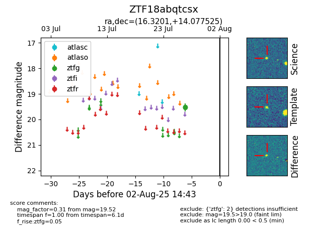

Target ZTF18abqtcsx at 2025-08-06 17:45, see:
FINK: fink-portal.org/ZTF18abqtcsx
Lasair: lasair-ztf.lsst.ac.uk/objects/ZTF18abqtcsx
ALeRCE: alerce.online/object/ZTF18abqtcsx
alt names
ZTF18abqtcsx (ztf,fink)
coordinates:
equatorial (ra, dec) = (16.3201,+14.07752)
galactic (l, b) = (128.0171,-48.65750)
photometry
last ztfg=19.52
2 ztfg detections
